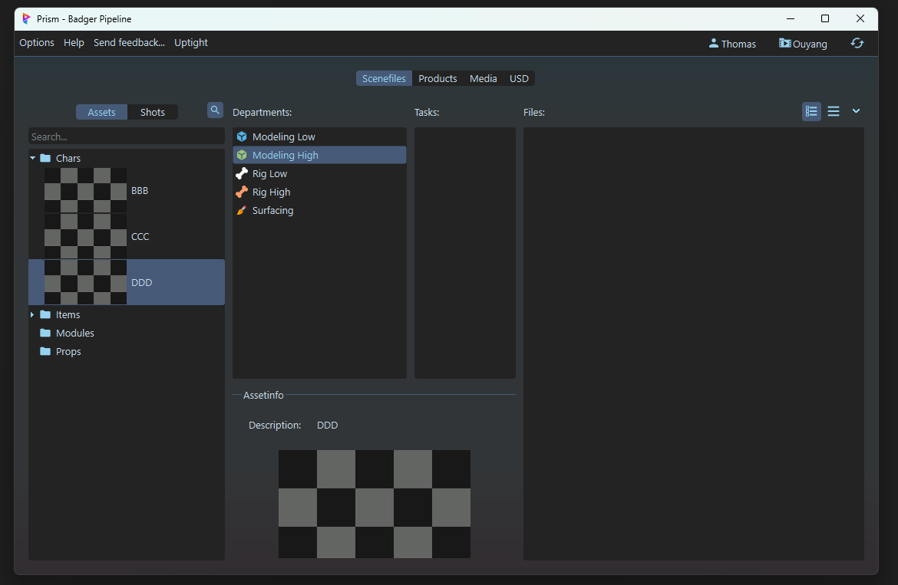
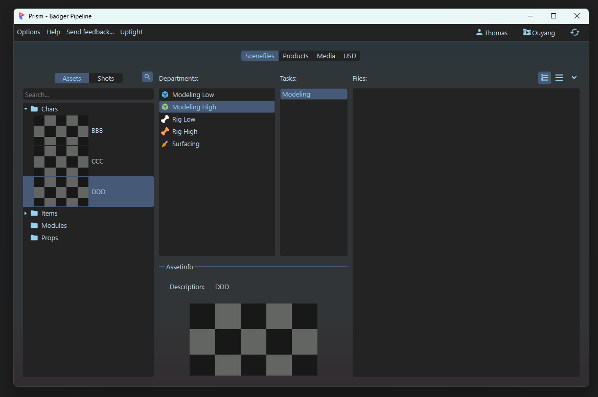
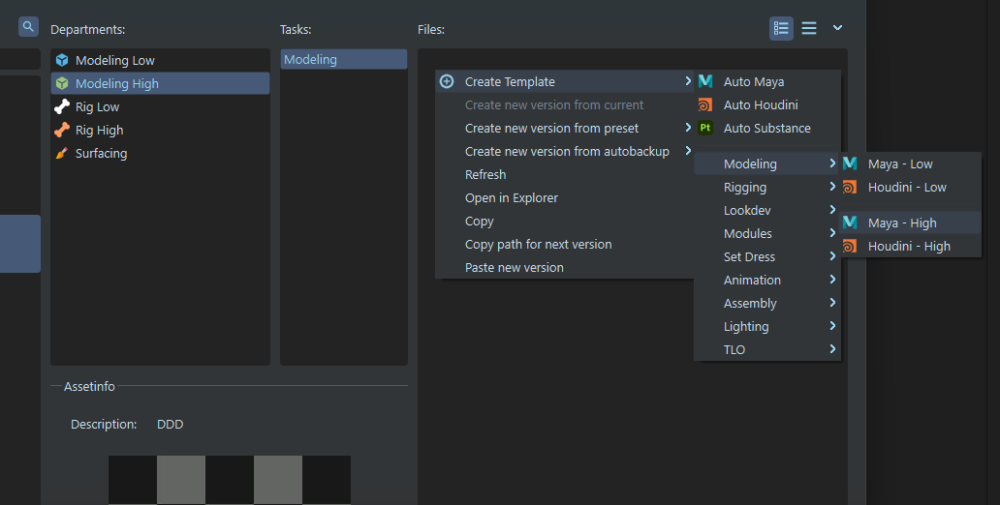
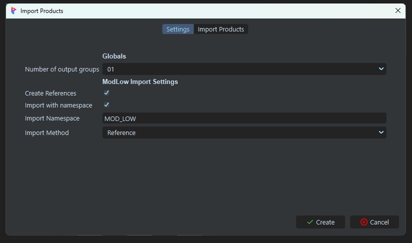
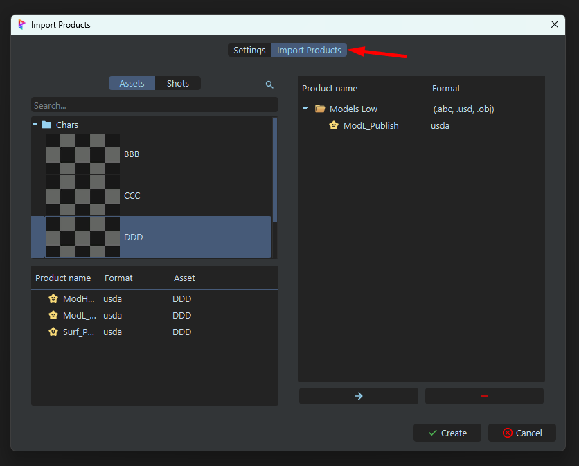
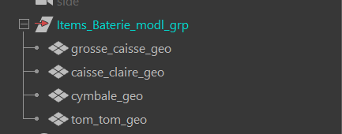
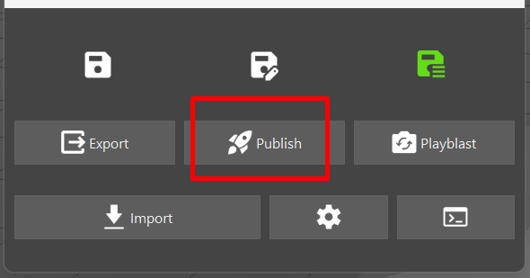
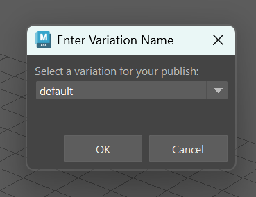
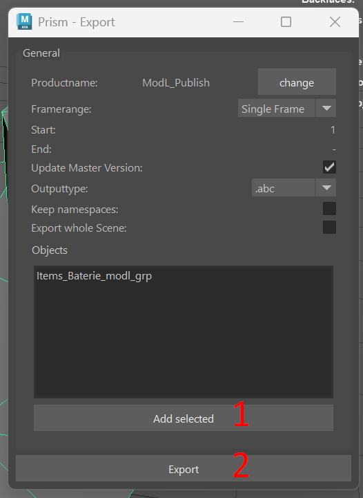

Modeling High⚓︎
Travail à l'asset
Description⚓︎
Le Modeling High est le deuxième niveau de modélisation 3D dans le pipeline de production. Il s'agit des modèles 3D définitifs, affichés à l'écran.
Ces modèles serviront à :
- Produire la géométrie finale utilisée dans le rendu.
- Servir de référence pour le texturing et le shading.
- Être utilisés dans le rigging final et l’animation.
Qu'est ce qui rentre ?⚓︎
Le Modeling High reçoit en entrée le fichier .usd produit par le Modeling Low.
Qu'est ce qui sort ?⚓︎
Le Modeling High sort un fichier de type .usd. Il doit contenir la géométrie finale, sans animation ni shading. Dans certains cas, des attributs supplémentaires peuvent être inclus, au besoin de l'asset.
Comment créer une scène dans Maya⚓︎
-
Assurez-vous d'avoir un département de
Modeling Highdans votre asset. Si ce n'est pas le cas, créez-en un.

-
Créez vous une tache (exemple :
modh_01). A noter que la nomenclature des taches n'est pas importante pour l'instant, vous pouvez mettre ce que vous voulez (UV, Procedural, Modeling, etc.).

-
Click droit sur la partie 'files' (à droite), puis :
Create Template->Modeling->Maya - High, ou simplement surCreate Template->Auto Maya

-
Cela devrait ouvrir une boite de dialogue demandant les paramètres de création de la scène.
- Le "
Number of output groups" correspond au nombre d'assets qui sont crées dans la scènes, et donc au nombre de variations qui seront générées. - Le "
Create Reference" détermine si on importe des assets ou non. - Le "
Import with namespace" détermine si les assets importés auront un namespace ou non. - Le "
Import namespace" détermine le namespace à utiliser pour les assets importés (par défaut MOD_LOW). - Le "
Import method" détermine le mode d'importation (par exemple, en référence ou en dur).
- Le "
-
Notez qu'il y'a une seconde page dans ce dialogue : "
Import Products". C'est la page qui sert à affiner les products qui seront importées dans la scène au cas ou l'algorithme passe à coté de quelque chose. Ici, on vas importer nos modeling low comme base pour nos modeling high. Lisez la documentation pour plus de détails sur cette page.

-
Cliquez sur le bouton "Create" pour créer la scène.
Cela devrait vous créer un fichier en .ma. Double cliquez dessus pour l'ouvrir dans Maya.
Dans maya, il devrait y avoir une hierarchie déja présente, avec les assets importés correctement.
Comment publier une scène dans Maya⚓︎
-
Une fois votre modélisation terminée, assurez-vous tout est propre, sans problèmes dans la géometrie (faire un
Mesh Cleanupsi besoin). -
Assurez-vous que tous les objets soit bien hièrarchisés, et bien groupés dans le groupe
[département]_[nom]_modh_low.

-
Selectionnez le groupe
[département]_[nom]_modh_lowdans l'outliner. -
Ouvrez la fenêtre du pipeline de production et cliquez sur le bouton
Publish.

-
Une premiere boite de dialogue s'ouvre pour vous demander sous quel variant exporter l'asset.
Si vous laisser "default", l'asset seras exporté sous le nom "ModH_Publish". Si vous mettez un numéro, l'asset sera exporté sous le nom "ModH_Publish_var[numéro]". Cela servira plus tard pour créer les differentes variations de l'asset.
Voir qu'est ce qu'un variant en USD
Une fois terminé, cliquez surOK, ouAnnulersi vous souhaitez annuler l'export.

-
Une seconde fenêtre s'ouvre, verifiez bien que le champ
Output Typeest bien surusd, et que le champobjectest bien sur le groupe a publier. -
Cliquez sur le bouton
Add Selected -
Cliquez sur le bouton
Exportpour publier votre fichier.

- Vous devriez voir un message de succès qui s'affiche. Le modeling est maintenant publié et automatiquement appliqué a l'asset USD.
Comment créer une scène dans Houdini⚓︎
- Todo
Comment publier une scène dans Houdini⚓︎
- Todo